Charlie Designs
He is currently doing a series where he designs and prints a different thing everyday and I find it to
be really interesting to see how he problem solves and I like how he will show designs that end up not
working great as well along side the ones that do. He also explores a lot of different things, ranging from
tools to toys to random experiments, and I think that that the ability to branch out into different areas is really important.
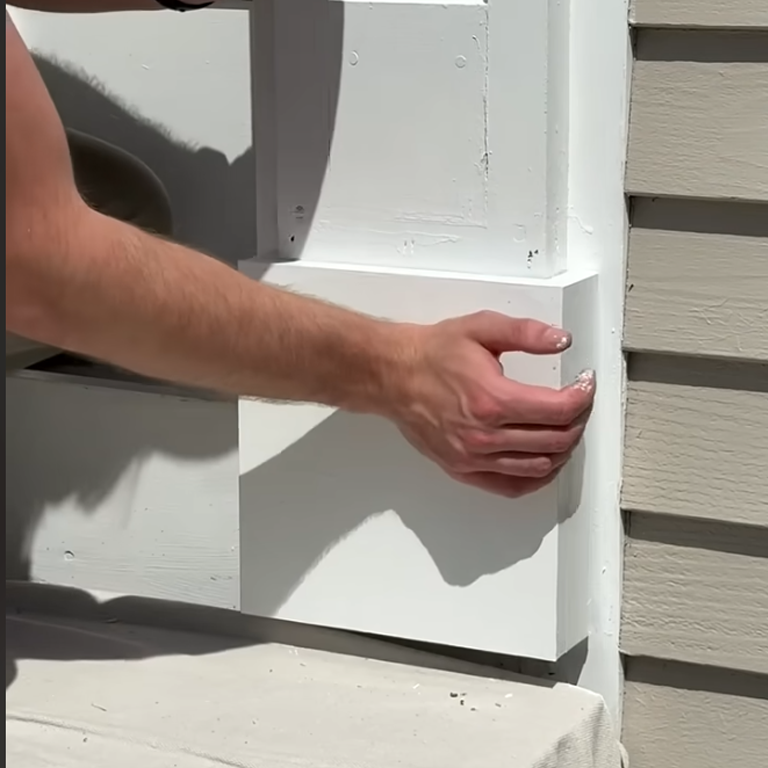
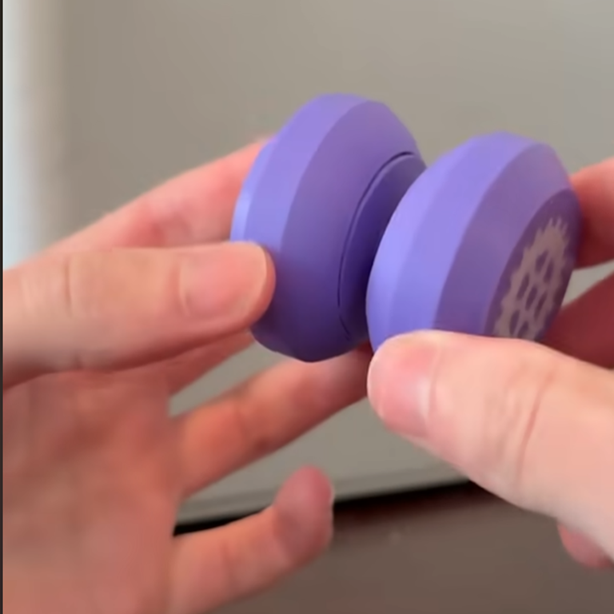
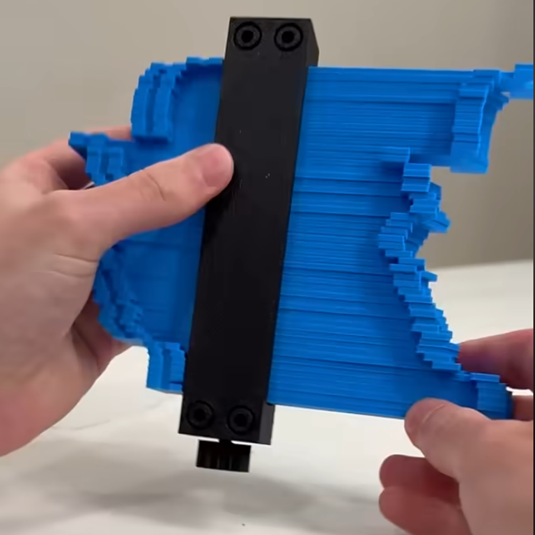
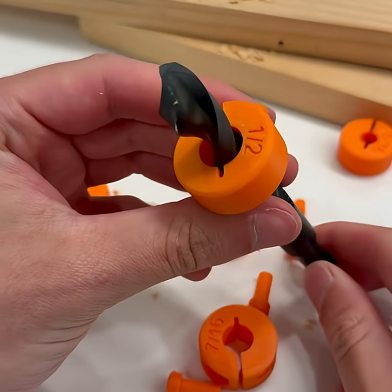
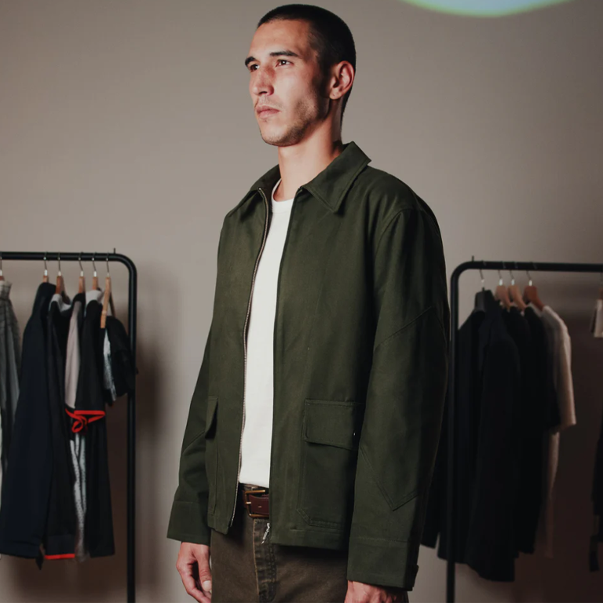
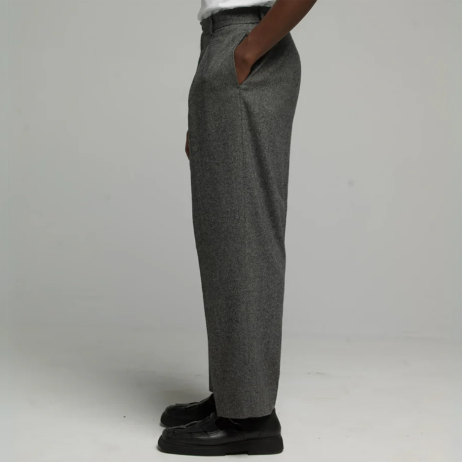
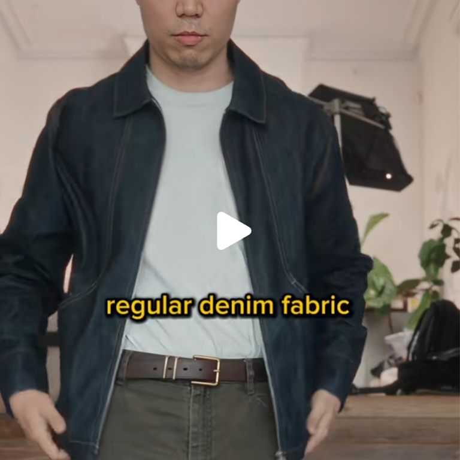
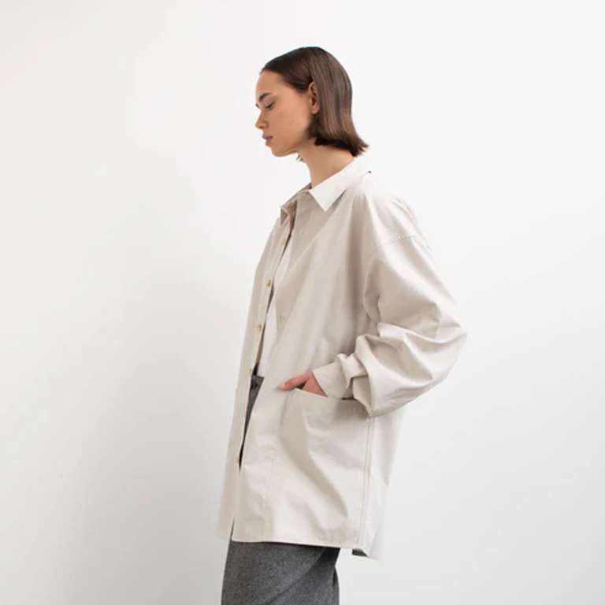
Ken from the frontoffice
I am not particularly interested in fashion design but the way that Ken presents his knowledge is super
thoughtful and intentional. They do a lot of work in combining different cultures and traditions and he
really does a deep dive into the history of it all. I really do think it's important to branch out into
different fields enough to at least get a general understanding of it, and their presentation of their
textile knowledge is invaluable.
Scott from ScottDropAndRoll
He is a prop master who does work for tv and movies who also makes content about the process of making
these
props and I think he provides a really cool insight on the prop industry as well as offering a unique
way of looking at materials, as half the time his job is to make a material look identical to a different
material while acting completely differently. he also teaches a lot about how to treat or finish a material to
make it look aged or worn or brand new, which might be an important skill to have as a product designer.
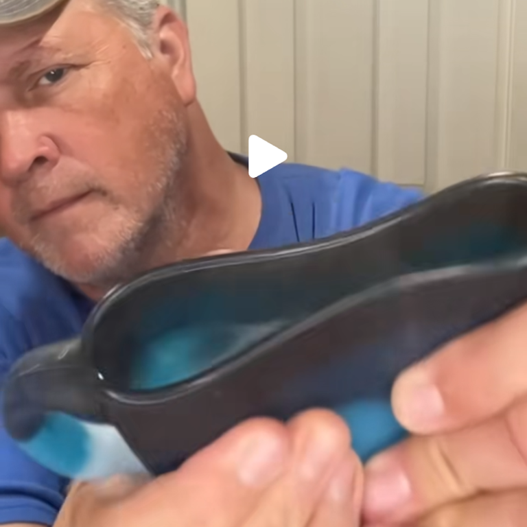
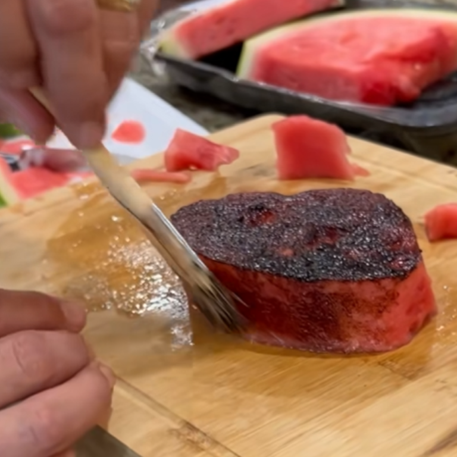
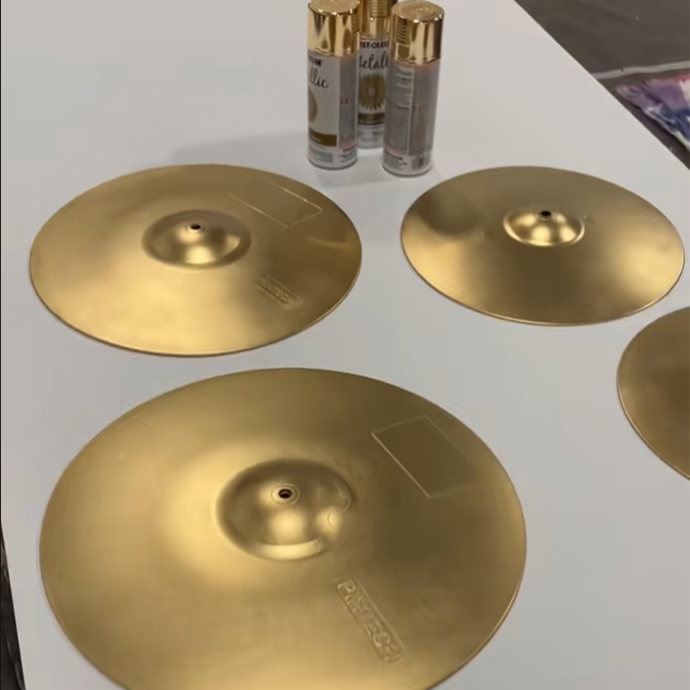